Scale by hand
Digital scales for dough, spoons for curd. If a recipe only works when a machine mediates every gram, it does not live here.
Riverhead atelier · morning bake
We fold butter while the city wakes, glaze when the light turns honest, and send the first crullers out before the queue doubles back on itself.
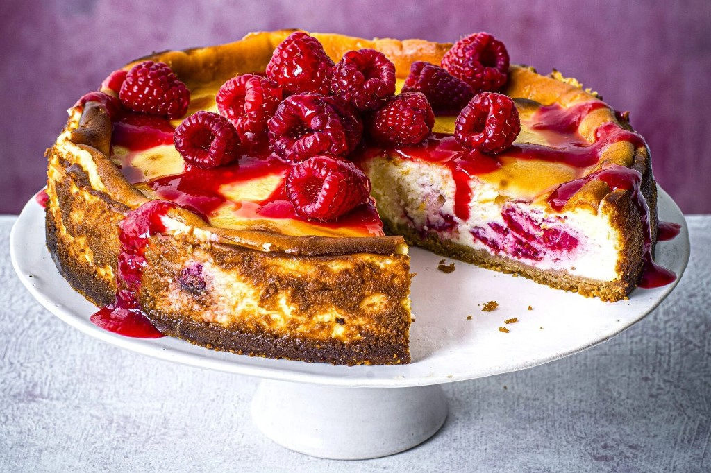
Swipe along the pass — each tile is something we actually ran this week.
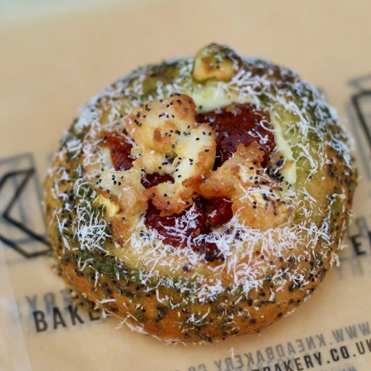
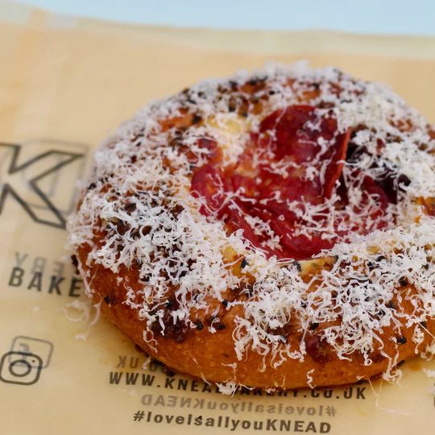
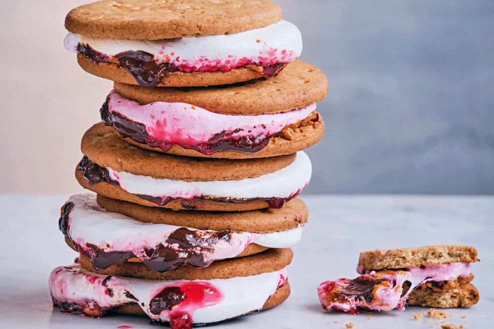
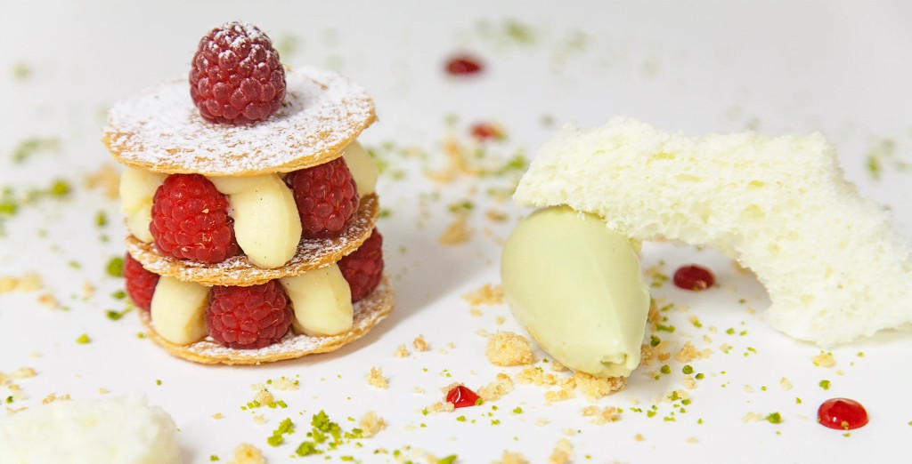
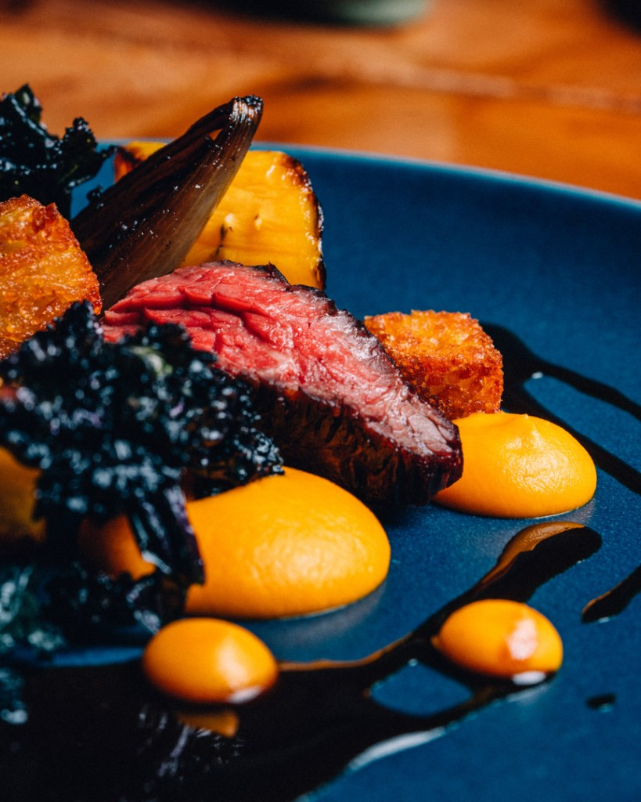
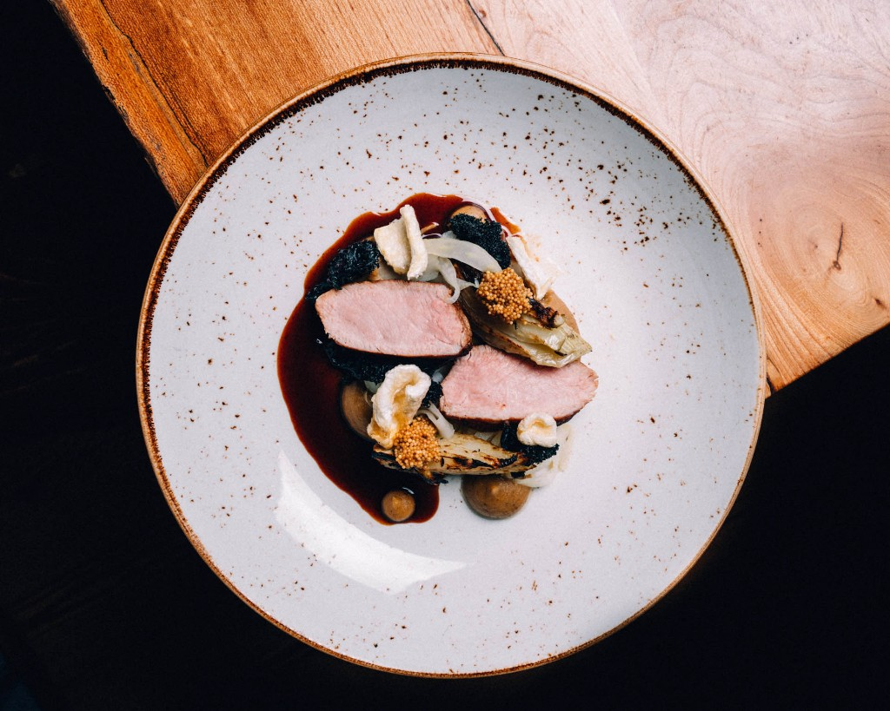
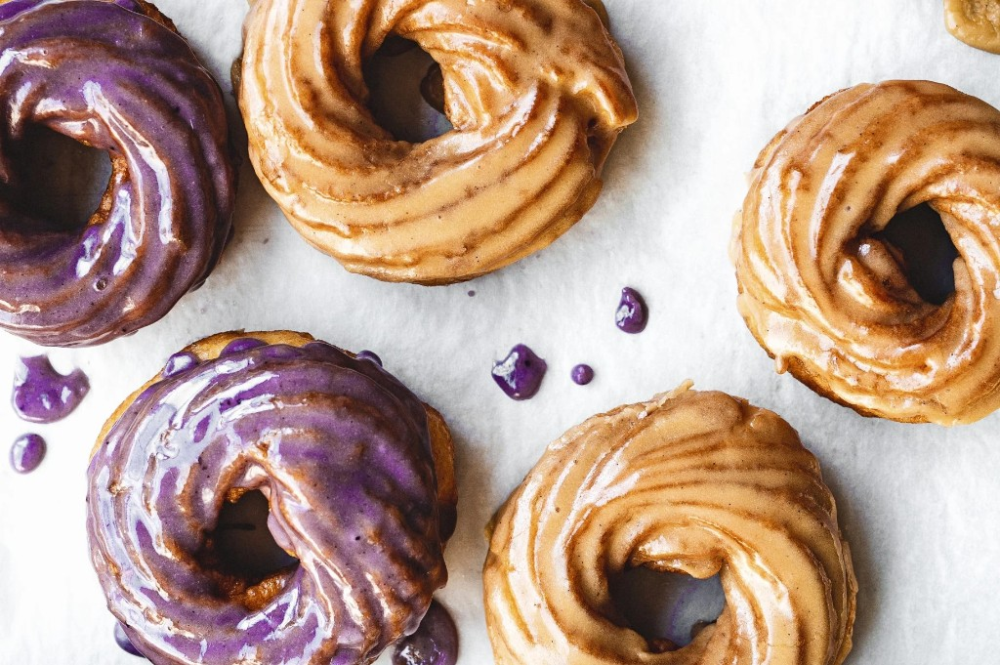
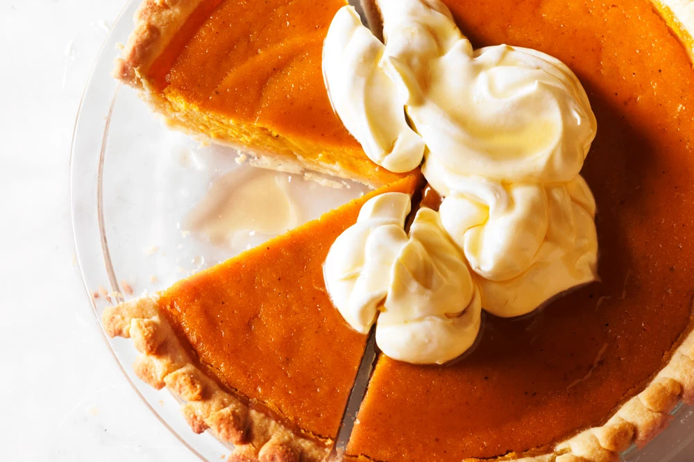
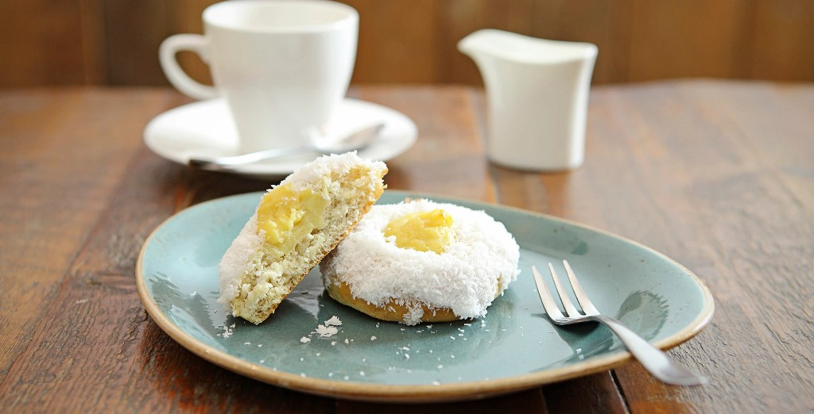
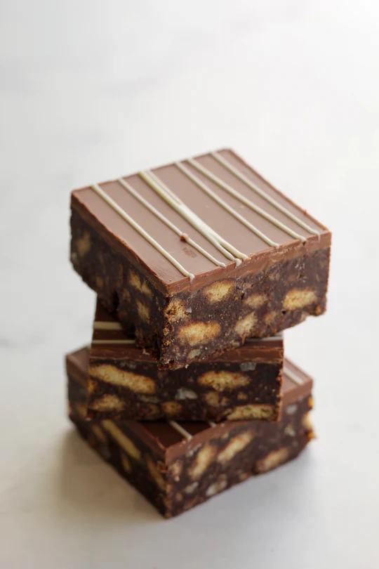
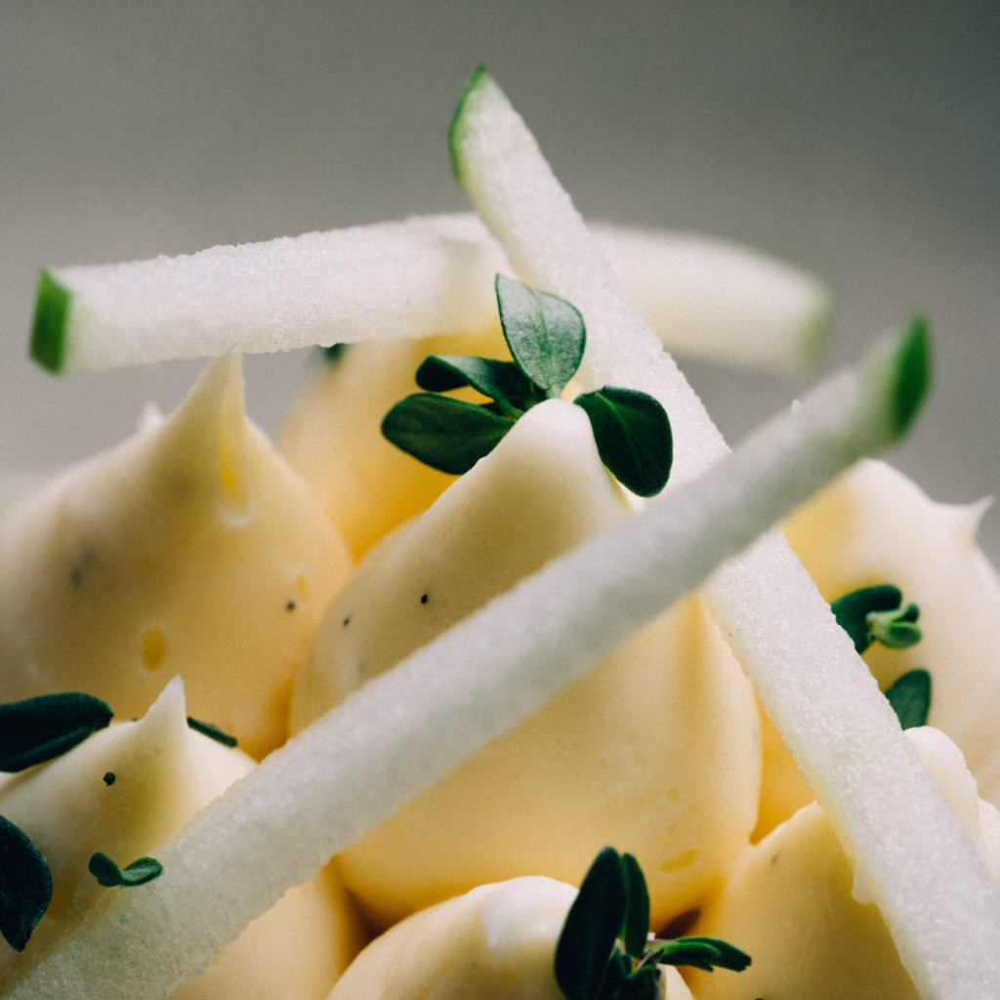
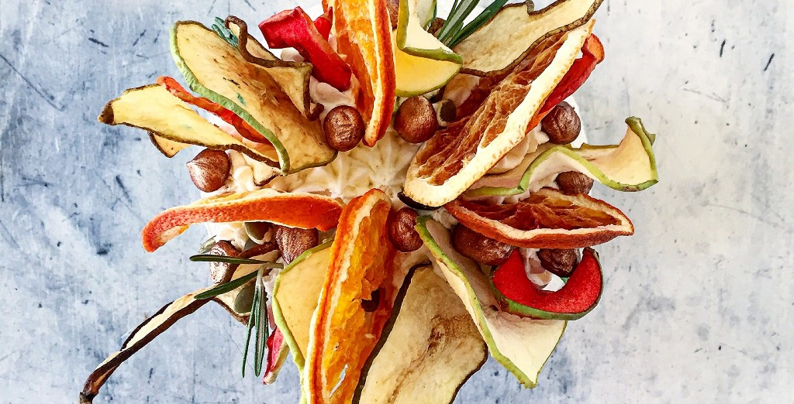
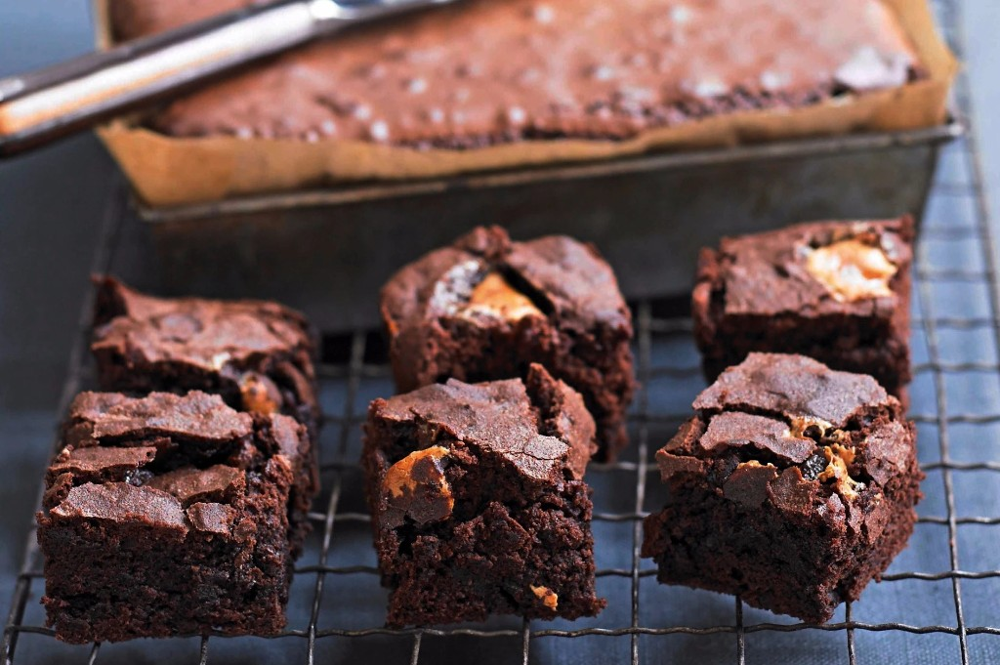
How we work
Guests taste rhythm as much as sugar. These rules keep the room quiet even when the oven isn’t.
Digital scales for dough, spoons for curd. If a recipe only works when a machine mediates every gram, it does not live here.
Laminated dough sleeps overnight. Custards set under cloth. We publish fewer names so the ones on the board have actually rested.
Staff taste before you do. If the cut isn’t clean or the shine is dull, it returns to the bench — not to your plate.
Guest note
Someone scribbled “We missed our train on purpose” on the back of a receipt — raspberry glaze still tacky on their thumb.
You can hear the kitchen exhale between waves. We ordered one of everything for two people and nobody rushed us.
Pass timeline
Steam in the air, first coffee for the baker on duty, ovens whispering up to temperature.
Fruit macerates, ganaches satin, crullers dip while the glaze is still willing to run.
Cards rewritten in ink, heights adjusted so the light hits mousse, not foil.
Brownies cut, savouries tucked beside sweet for the lunch crowd that pretends it is only here for coffee.
Bench journal
We brought the cruller glaze back one shade darker after Tuesday’s rain — humidity steals shine, so we leaned on maple until the sheen held. The savoury buns stay through Sunday; next week we swap in a lentil pithivier if the market has the small French lentils we like.
If you need a full sheet for an office, send the note before Thursday noon — we only book two large pulls per weekend.
Sourcing
No logos on the wall — just suppliers who answer the phone when a delivery lands short.
Visit
Wednesday through Sunday we keep a short queue at the door so the cold chain stays honest. Dogs get water outside; humans get napkins inside.
We text a short list when the maple pot is almost empty — add your number at pickup if you want in.